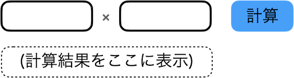

自動テストとPuppeteerとPage Object Patternの話
2020-12-06 13:12:16 +0900 JST
Categories: Test
この記事はソフトウェアテスト Advent Calendar 2020 8日目の記事となります。E2EテストのライブラリとしてPuppetterと、テストコードを書くときに意識したPage Object Patternについてまとめます。
今回書くスコープ
今回はPuppetterをPage Object Patternで書く場合にフォーカスしますので、Puppetterでないといけないとかそういったことはないです。最近だとMicrosortから、Puppetterと同じ使いやすさでSafariにも対応したPlaywrightというのも出ています。
テストコードを書く言語はTypeScriptとしています。
Page Object Patternとは
Page Object Patternはその名の通りあるWebページの中にある要素をオブジェクトとして定義し、そのオブジェクトを経由してテストを実行するための実装パターンです。より詳しい定義はSeleniumのページを見ると良いでしょう。
ページオブジェクトモデル - Selenium
例えば掛け算をするUIを例にします。
2つの入力ボックスと1つのボタンと1つのラベルがあり、ボタンを押すと2つの入力ボックスに入力された値を掛け算し、最後に計算結果をラベルに出力します。

この画面へのテストとして以下のE2Eテストを行います。
| 操作 | 期待値 |
|---|---|
| 左の入力に100を、右の入力に1.1を入れて計算ボタンを押す | 110と表示されること |
普通に書くならこんな感じでしょう。
await puppetter.type('input[1]', 100);
await puppetter.type('input[2]', 1.1);
await puppetter.click('button');
const value = await puppetter.$eval('p', e => e.textContent);
expect(value).toBe('110');
上の例の場合はそもそもテスト仕様もよくないのですが、このテストコードにはいくつかの問題があります。何を検証したいのかわからないですし、なぜその入力値にしたのかもわかりません。
お察しかと思いますが、こちらは消費税を含めた金額の計算を行う画面のテストです。ですがこれだけのコードでは税を計算するという意図が全く読み取れず、なぜか100と1.1をテストパターンに採用しているという状態です。数値から推測はできますが、もしこの画面が本当にただの掛け算アプリで、適当にこの値にしましただったらなんでこんな紛らわしいテストにしたんじゃとブチギレ必死でしょう。そんな紛らわしい状態になっているのが問題なのです。
これをPage Object Patternを使ってリファクタしてみます。
まずPage ObjectというからにはこのページをObjectとして定義します。このページでは掛け算をすることができるので、2つの入力値を受け取って計算する関数と、計算結果を確認する関数を作成します。
import { Page } from 'puppeteer';
export class CalcPage {
constructor(public page: Page) {}
async calc(x: number, y: number): Promise<void> {
await puppetter.type('input[1]', x);
await puppetter.type('input[2]', y);
await puppetter.click('button');
}
async assertShowCalcedValue(value: number): Promise<void> {
const calcedValue = await puppetter.$eval('p', e => e.textContent);
expect(calcedValue).toBe(value);
}
}
これを実際にテストする場合はこの2つの関数を呼び出すだけとなります。
const calcPage = new CalcPage(page);
await calcPage.calc(100, 1.1);
await calcPage.assertShowCalcedValue(110);
テストコードからはDOMの操作が一切なくなり、手続きベースのテストコードにリファクタできました。オブジェクト化によってDOMの操作がカプセル化されました。これでもいいかもしれませんが、やはり何を計算するのかという大事な観点まではオブジェクトの振る舞いとして定義しきれていません。そこでさらにリファクタしてみます。
import { Page } from 'puppeteer';
export class CalcPage {
constructor(public page: Page) {}
async calcTax(price: number, options: { reducedTax: boolean }): Promise<void> {
const taxRate = options.reducedTax ? 1.08 : 1.1;
await puppetter.type('input[1]', price);
await puppetter.type('input[2]', taxRate);
await puppetter.click('button');
}
async assertShowCalcedPrice(taxIncludedPrice: number): Promise<void> {
const calcedPrice = await puppetter.$eval('p', e => e.textContent);
expect(calcedPrice).toBe(taxIncludedPrice);
}
}
これをテストで呼び出すとこうなります。
const calcPage = new CalcPage(page);
await calcPage.calcTax(100, { reducedTax: false });
await calcPage.assertShowCalcedPrice(110);
大きく変えたのは関数名と引数です。まずcalc関数は明確に税計算をするものとしてcalcTax関数にリネームしました。さらに引数にオプションを渡せるようにしました。これは対象商品が軽減税率を適用するかどうかをboolean値として渡すオブジェクトです。なら引数に直接booleanを渡せばいいのではと思うかもしれませんが、こう書くことによって呼び出し側で意図的にこのプロパティ名に対する値を指定するという書き方にできます。
1.08や1.1を渡すのではなく軽減税率を適用するかどうかを聞くことで明確に税の計算であるという意図が含まれるようになっています。
await calcPage.calcTax(100, false);
// こちらのほうがfalseが何を指しているのかがわかりやすい
await calcPage.calcTax(100, { reducedTax: false });
税を計算するということは金額にまつわるものとなるため、assert関数名もValueからPriceにリネームしています。
改めて比較してみましょう。
await puppetter.type('input[1]', 100);
await puppetter.type('input[2]', 1.1);
await puppetter.click('button');
const value = await puppetter.$eval('p', e => e.textContent);
expect(value).toBe('110');
const calcPage = new CalcPage(page);
await calcPage.calcTax(100, { reducedTax: false });
await calcPage.assertShowCalcedPrice(110);
どちらが保守性の高いテストコードかは一目瞭然ですよね。え、上の方がわかりやすい？もしかして君はDOMパーサーかな？
冗談はさておき、ここまでいくと今度はテストの意図に対してUIが乖離しているように感じます。なので開発チームにUX改善を提案しましょう。
なぜPage Objectにするのか
一言で言えばそれはもう保守のためです。それだけです。Page Object Patternはテストコードを書く面倒さをさらに面倒にすることを引き換えに保守に全てガン振りしたようなものです。
あなたの書いたコードはあなたによって永遠にメンテナンスされるとは限りません。
特にテスト自動化において避けるべきはテスト失敗を放置しないことです。E2Eテストはびっくりするほどテストが失敗ます。DOMの変更はもちろん、タイムアウトだったりバージョン差異だったり逆に待たなさすぎて落ちたりします。
テスト失敗が続くとだんだんと自動テスト自体への信頼が下がり、やがてあってないようなものとしてチームから無視されてしまいます。あなたの手が空いていれば対応できるかもしれませんが、その時のに保守性の低いコードの修正コストやあなたが手一杯で他の人が修正するケースの場合を考えれば、テストコードというのは初めから高い保守性を必要とするものであると考えられます。
つまりPage Object Patternは作るのが大変だが、作った後のテスト自体の保守性、ひいてはテストへの信頼性をあげるために導入すべきであるというのが私の考えです。
テストコードがテストシナリオになる
PageをObjectにするということは、Pageというものが抽象化されるということです。先ほどの例ではまずDOMへのアクセスがカプセル化され、やがて目的をもって操作するという関数にリファクタされました。これなら普段E2Eテストを書かないようなエンジニアにとっても自動テストで何のテストをしているのかがわかります。何のテストをしているのかがわかれば、メンテするときもその関数の中の実装だけメンテすれば良いということになります。
await calcPage.calcTax(100, { reducedTax: false });
await calcPage.assertShowCalcedPrice(110);
これで2行目のテストが失敗すれば税計算後の期待が違うということは一目瞭然でしょう。となればassertShowCalcedPriceの関数を見ればOKなのです。
メソッドチェーンにすべきか
例えばログイン画面でログインボタンを押した後にトップページに戻るというシナリオの場合、clickLoginButton関数の戻り値にTopPageオブジェクトが返ってくるとかなり嬉しいです。戻り値によって次にどのページに遷移するのかというのを示すことができます。
async function clickLoginButton(): Promise<TopPage> {
await this.page.click('button');
const topPage = new TopPage(this.page);
// Page Object Patterなら何を持ってトップページの描画を完了とするかもTopPageの中で定義できる
await topPage.waitForRender();
return topPage;
}
const topPage = await loginPage.clickLoginButton();
// TopPageにclickLoginButtonは実装されてないのでエラーになる
await topPage.clickLoginButton();
Page Object Patternは型をうまく使うことによってページ単位でできること・できないことを定義できます。となれば何かしらの操作に対してPage Objectを返すことによってメソッドチェーンによるテストシナリオもできます。
// こんな風にできるんやろなぁ...
await loginPage.clickLoginButton()
.assertShowTopPage();
.scrollToBottom();
.clickContactLink();
...
これができると、メソッド=やることなのでさらにめちゃくちゃ読みやすくなります。が、しかし……!
PuppetterはあくまでDev Toolsのラッパーであるため、実際にその処理を実行するのはChroniumやFirefoxといったブラウザです。Puppeteerの関数のほとんどは戻り値がPromise型、つまり非同期処理となります。
これをメソッドチェーンで書く場合は非同期処理も考慮に入れなければなりません。またチェーンで繋ぐという性質上、非同期処理と同期処理をチェーンで繋ぐことはできないため、同期処理をPromiseでラップする必要があります。ということで実際はPromiseのチェーンを使うことになります。
loginPage.clickLoginButton()
.then(top => top.assertShowTopPage())
.then(top => top.scrollToBottom())
.then(top => top.clickContactLink())
.then(contact => contact.assertShowPage())
...
await祭りもPromiseチェーンも書く量は正直あまり変わらない気がするのでお好みで好きなスタイルにすればいいかなと思います。
まとめ
Page Object Patternは正直めちゃくちゃ大変です。とにかくコード量が増えます。中にはテストに対してそこまで力を入れるべきではないと考える人もいるかもしれませんが、せっかく作ったテストを長く使われ続けるようにするためにも、少なくとも私はこれからもPage Object Patternを使ってE2Eテストを書くことでしょう。